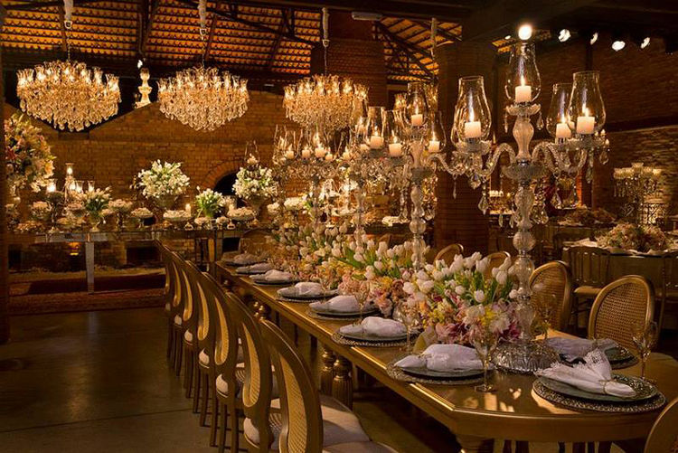
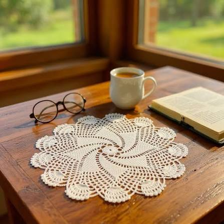
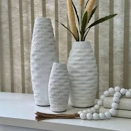
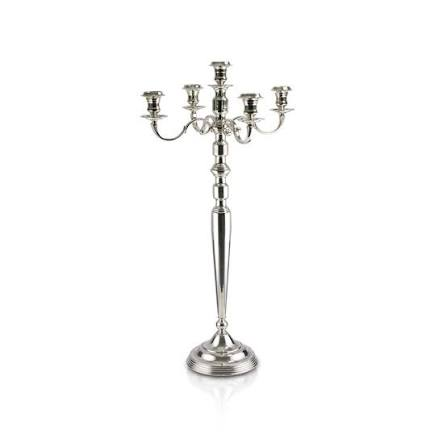
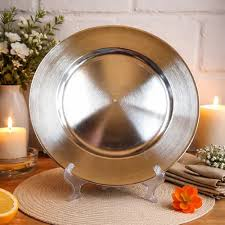

Rechauds
Rechauds para buffet
Praticidade para servir com uma apresentação elegante.
Rechauds, paillas, sousplats e suportes para criar mesas e ambientes com beleza, praticidade e personalidade.

Praticidade para servir com uma apresentação elegante.
Peças funcionais para manter o serviço bonito e organizado.

Uma base elegante para composições contemporâneas.

Altura e charme para valorizar a mesa de doces.

Uma base especial para destacar o centro da celebração.

Luz e presença para mesas que pedem atmosfera.

Estrutura e personalidade para arranjos e ambientes.

Detalhes que fazem a composição da mesa ganhar camada.
Não é sobre preencher um espaço. É sobre criar a sensação certa quando alguém chega.Curadoria Nakine